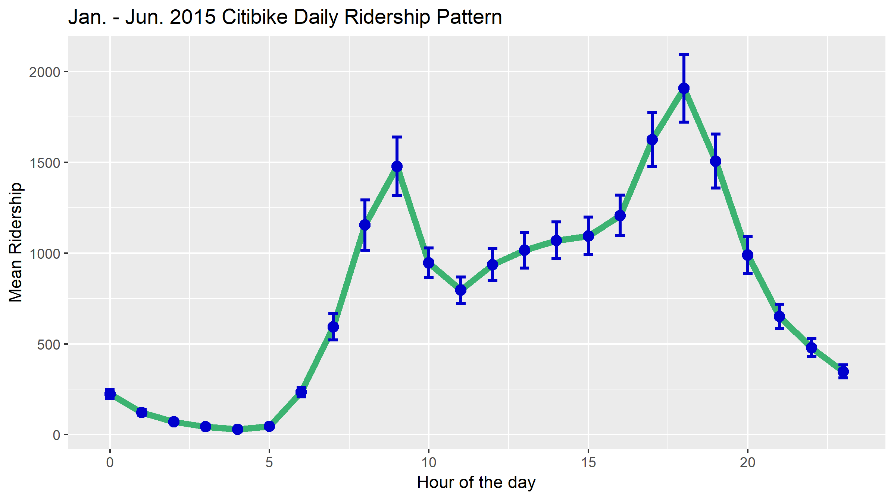
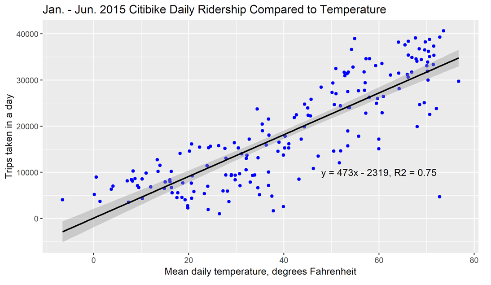
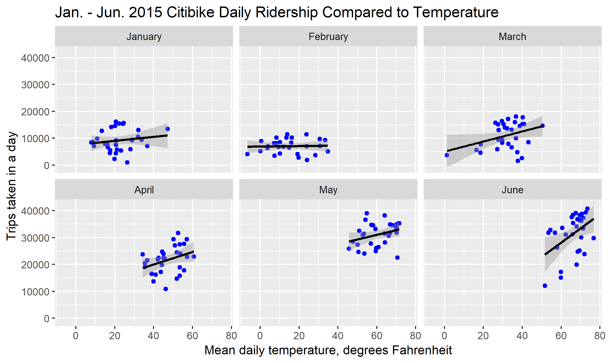

Eager to learn about statistical and spatial analysis with R, I decided to learn some of its applications by analyzing NYC's Citibike bikeshare program. I gathered data for all rides taken from January through June of 2015. The general pattern of use throughout the course of the day is plotted below.
As shown, more people commute with Citibike in the evening than in the morning. This pattern interested me and I began to think about what factors would cause this imbalance. Becoming sweaty before arriving at work is a major deterrent to cycling in the morning, and this factor wouldn't have as much impact on a commuter's willingness to cycle home from work. I also though about temperature, which is higher in the evening. To determine if temperature had an impact on ridership, I calculated the mean hourly temperature for each day in the study period and plotted that value against ridership. The results are shown in the two figures below.
 
The first figure shows results that aren't particularly surprising; cycling in cold weather is generally not pleasant. However,
the second figure reveals something interesting: in warm months, ridership is more sensitive to temperature changes than it is in cold
months. January and February both show flatlined ridership, suggesting that even on warm days, riders on the system are likely to be
part of a dedicated core of members who cycle regardless of the cold.
Interested in how other weather conditions may impact ridership, I downloaded a csv file that described weather conditions qualitatively in
NYC for each hour. I grouped the conditions into five broad categories and then determined the average hourly ridership for each category.
These results were a bit puzzling. Fog/haze/smoke likely has the highest value because these conditions are less likely to occur at
night when baseline ridership is quite low. I can't think of factors that would cause riderhip when light rain is present to appear
higher than ridership during normal conditions, however.
As a geospatial professional, I had to explore some of R's spatial packages. Using the packages sp and geojsonio, I decided to map the stations
in Citibike's network circa 2015 based on ridership. One of the biggest challenges for docked bikeshare providers comes when stations are either
overcrowded, which prevents users from locking their bikes up, or completely empty. Given this challenge, I chose to map the number of arrivals and
departures at each station, as well as the difference between these two figures, which I termed "net ridership". The results are shown below.
The net ridership map shows patterns that match up with the daily pattern of ridership: there are generally
more depatures than arrivals in the central business district, which is midtown Manhattan in this case. This lines up
with the higher ridership that occurs during the evening commute when workers would leave the CBD.
Interestingly, the secondary CBD in lower Manhattan does not display this same pattern of low net arrival values.
Learning about data visualization in R was fun and you can check out
my code here.